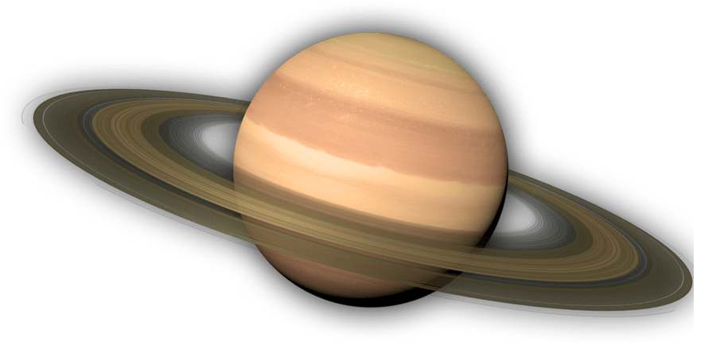

Desde a Antiguidade até os dias atuais, o ser humano busca entender o cosmos. Esta linha do tempo destaca marcos importantes na história da astronomia e da cosmologia, desde as primeiras observações até as descobertas mais recentes.
